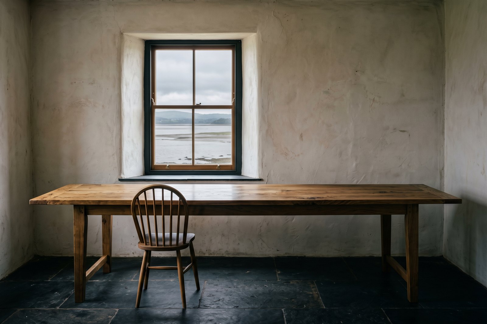

12 Aug 2026
The slate landed
Eleven tonnes from Ffestiniog, stacked in the yard for a fortnight while the roofers finish the west pitch. It is a colder grey than the sample, which we prefer and did not plan.
The build log
Four entries in twelve months, which is the real rate. We would rather write nothing than write something.
12 Aug 2026
Eleven tonnes from Ffestiniog, stacked in the yard for a fortnight while the roofers finish the west pitch. It is a colder grey than the sample, which we prefer and did not plan.

30 Jul 2026
Lime, three coats, and each one needs a week between them, which is why this took the whole summer and why the last four are next spring's problem.

18 Jun 2026
Signed with a workshop in Machynlleth. Oak, and one long run rather than an island, because the room is eleven feet wide and an island would be a wall.

2 May 2026
The marram is holding and the channel has moved nine metres east since the 2019 chart. Neither is a problem for the building. Both change the walk to the water.

The board
Five samples went to the joiner in March. Every colour on this site is one of them measured, so the swatch and the plate cannot disagree.
Opening May 2027
Five emails over the next year, and then an invitation forty-eight hours before anybody else gets one.
You are on the list
Check your inbox — there is one email there asking you to confirm, and nothing else happens until you do.
You are number 1,205.
1,204 ahead of you · 7 of 11 rooms plastered